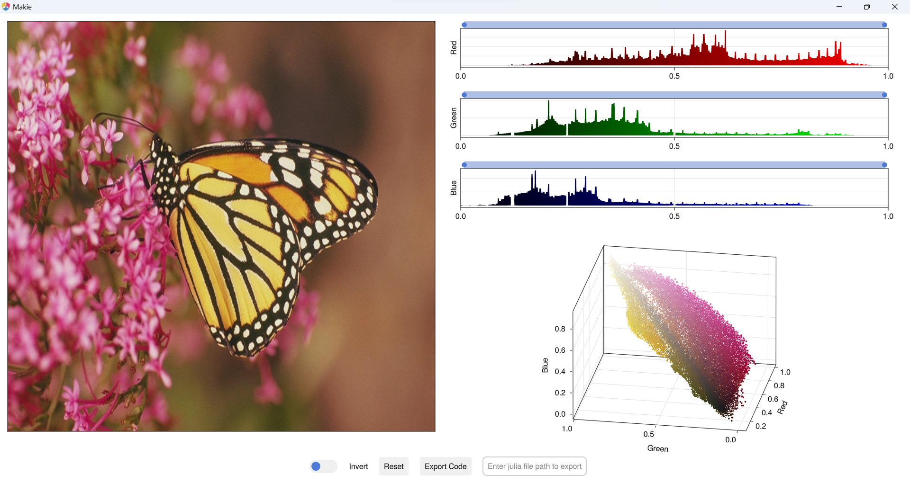

Usage
ImageColorThresholderApp supports following image color spaces
- RGB
- HSV
- Lab
- YCbCr
Each color space image open with thier repsected channels.
using GLMakie
using ImageColorThresholderApp
using TestImages
using ColorTypes
rgb_img = testimage("monarch_color")
hsv_img = HSV.(rgb_img)
lab_img = Lab.(rgb_img)
ycbcr_img = YCbCr.(rgb_img)image_color_thresholder_app(rgb_img)
image_color_thresholder_app(hsv_img)image_color_thresholder_app(lab_img)image_color_thresholder_app(ycbcr_img)Pluto.jl
ImageColorThresholderApp integrate with Pluto.jl by using WGLMakie